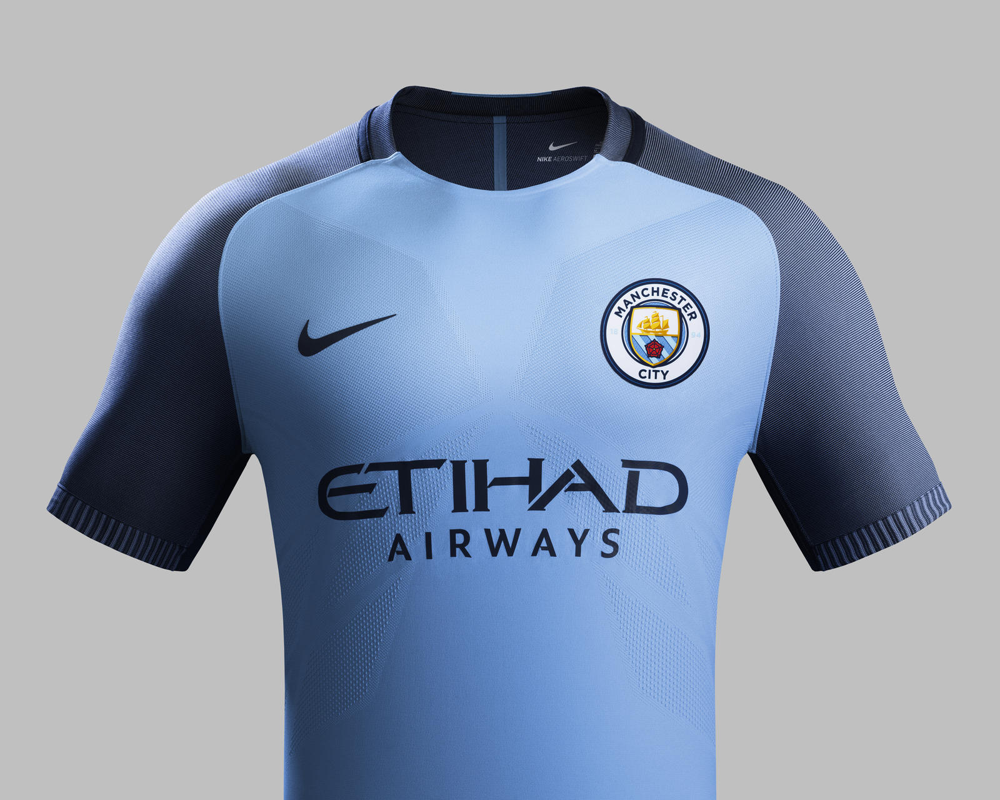

Manchester City
Undoubtebly the best team in the EPL
Undoubtebly the best team in the EPL
2 Manchester City's history can be summed up by one statistic: they are the only English champions to be relegated the following season. It is an apt reflection of a club who have lurched violently between the sublime and the ridiculous, and who have often seemed to have tragicomedy in their genes.
The club began life at St Mark's (West Gorton) in 1880, before changing their name to Ardwick AFC and then, in 1894, Manchester City. The newly named club jumped between Division One and Division Two, but almost did the Double in 1904. City won the FA Cup and were runners-up in the league.
The next two years were marked by allegations of financial malpractice, and 17 players were suspended in 1906. At this stage City were playing at Hyde Road, but a fire in 1920 precipitated an eventual move to Maine Road. There was a two-year spell in the second tier, but City were far more successful in the Thirties: they lost the FA Cup final in 1933, won it in 1934 and then became champions for the first time in 1937. Incredibly, they were relegated the next season; even more incredibly, they went down despite being the league's top scorers.
City were promoted back to Division One in 1947 and then again - after their fifth relegation - in 1951. History repeated itself in the Fifties when City lost the FA Cup final one year and won it the next. The latter, in 1956, was a 3-1 win over Birmingham in which City's German goalkeeper Bert Trautmann famously played on with a broken neck.
After the obligatory relegation in 1963 - the Tens and the Seventies were the only decades in the 20th century in which City did not go down from the top flight - City returned in 1966 and had their greatest period. A second title was won in 1968, when City pipped their rivals Manchester United after winning 4-3 at Newcastle on the final day.
For a time, with a team containing the likes of Francis Lee, Colin Bell and Mike Summerbee, City were undeniably the cock of the walk in Manchester. They won the FA Cup in 1969 and then the League Cup and the Fairs Cup in 1970. City also finished only a point behind the champions Derby in 1972 (even though, in an incredible title race, City finished fourth) and won six times in seven league visits to Old Trafford. The last of those came in 1974, when the United legend Denis Law scored the only goal of the game on the day United were relegated. Even though United would have gone down anyway, it was a richly symbolic moment.
City lost the League Cup to Wolves that year, but won the trophy against Newcastle two years later after Dennis Tueart's famous overhead kick. It was City's last trophy of the 20th century. An extended decline ensued, despite the return of Allison in 1979. He lasted just over a year and infamously paid a British transfer record fee of ??1.45 million for Steve Daley, who flopped badly.
Defeat to Tottenham in a classic FA Cup final replay in 1981 was followed by relegation two seasons later - when City lost at home to Luton in a winner-takes-all match on the final day. That was the first of four promotions to or relegations from Division One in seven years, but, after an unforgettable 5-1 victory over United in 1989, they seemed to find a degree of stability under the management of Peter Reid at the start of the Nineties.
City finished fifth in the last two seasons before the inception of the Prmier League, but then what is often called 'Cityitis' kicked in.
They were relegated in 1996 - farcically, their midfielder Steve Lomas kept the ball by the corner flag in the dying minutes when City needed a goal to stay up - and then, for the first time in their history, went down to the third tier in 1998.
The club were promoted at the first attempt after an amazing play-off final victory over Gillingham, in which City scored twice in injury-time and then won on penalties. This was a tumultuous period even by City's standards - they were promoted or relegated in five consecutive seasons - but they have been resident in the Premier League since the last of those, under Kevin Keegan in 2002.
The next few years were spent in mid-table, although there was another moment of Cityitis when, in the last minute of the 2004-05 season, Robbie Fowler missed the penalty that would have secured a Uefa Cup place. Soon, City would have even higher sights: when Sheikh Mansour bought the club in 2008, it soon become apparent that he wanted City to become the biggest club in the world. As statements of intent go, paying a British record fee of ??32 million to sign Robinho from Real Madrid was up there.
Instant success proved elusive, and Mark Hughes was sacked halfway through the 2009-10 season, in which City just missed out on a Champions League place. But with such resources at their disposal, surely not even City could mess this one up and they duly secured their first trophy since 1976 the following season as Roberto Mancini brought them the FA Cup and Champions League football.
Next season, though, it would get even better as the Premier League title arrived in thrilling style. Needing to beat QPR on the final day of the season, City were losing 2-1 with just a few minutes to go and the title heading to rivals United. Last-gasp goals from Edin Dzeko and Sergio Aguero saw them claim the title for the first time in 44 years in the greatest ever finish to a top flight campaign. Only City could have done it that way.
Football League Champions
1936/37
1967/68
2011/12
2013/14
Football League Runners-up
1903/04
1920/21
1976/77
2012/13
2014/15
Division One Champions
2001/02
Division One Runners-up (New)
/00
League Division Two Champions (original)
1898/99
1902/03
1909/10
1927/28
1946/47
1965/66
League Division Two Runners-up (original)
1895/96
1950/51
F.A.Cup Winners
1904
1934
1956
1969
2011
F.A.Cup Runners-up
1923
1933
1955
1981
2013
League Cup Winners
1970
1976
2014
2016
League Cup Runners-up
1974
European Cup Winners Cup Winners
1969/70
1985/86
Starting XI
GK = Bravo
CB = Otamendi
CB = Kompany
LB = Clichy
RB = Zabaleta
CM = Gundogan
CM = Toure
CAM = De Bruyne
LW = Nolito
RW = Navas
ST = Aguero


Home Kit

Away kit